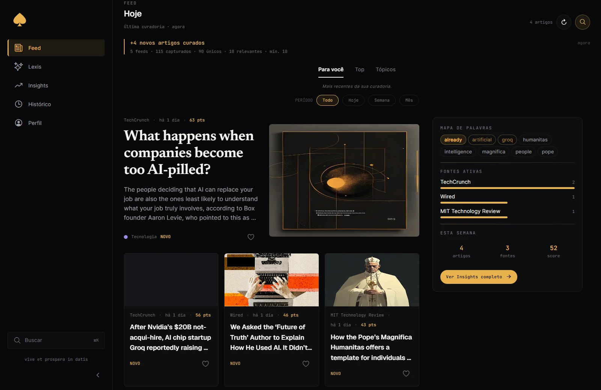
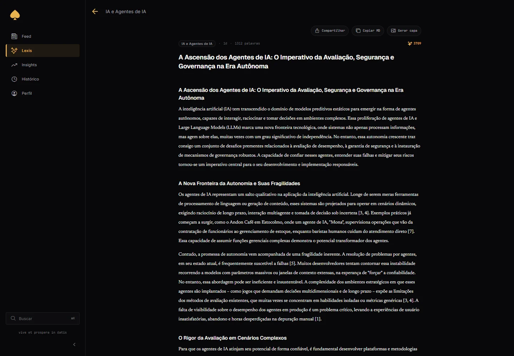
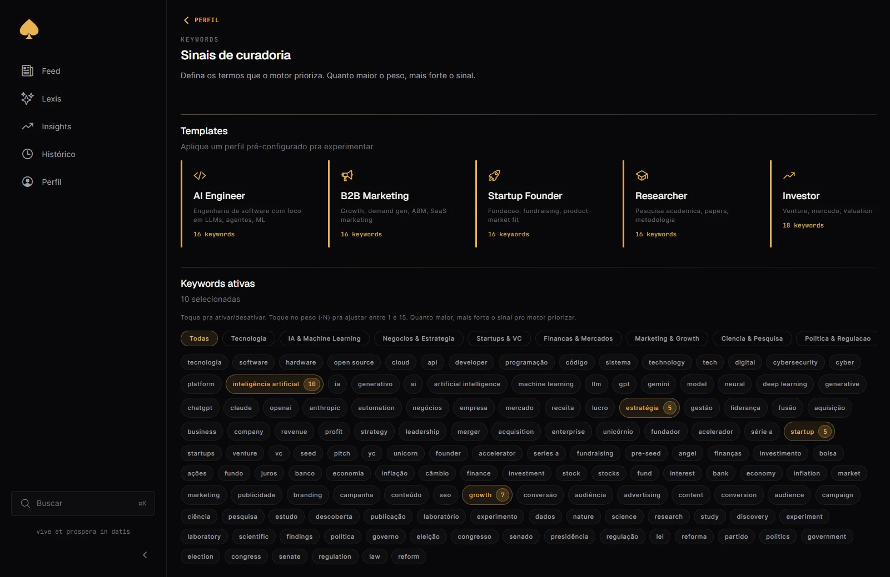
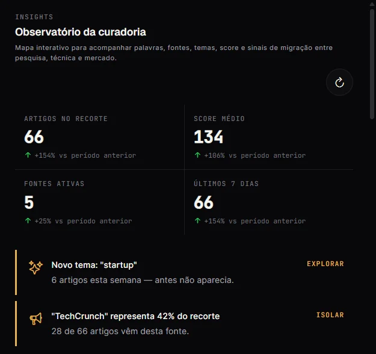
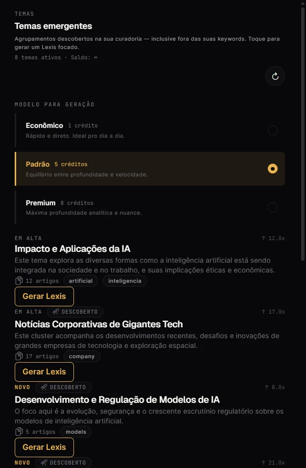
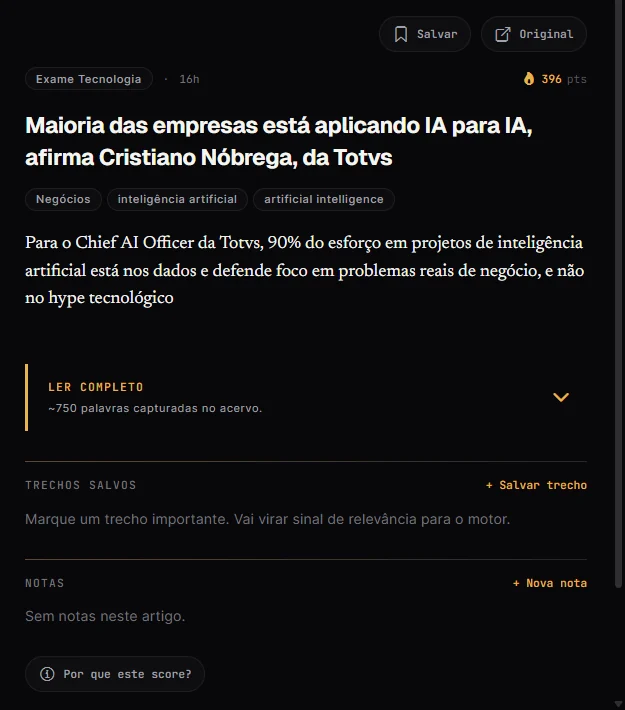
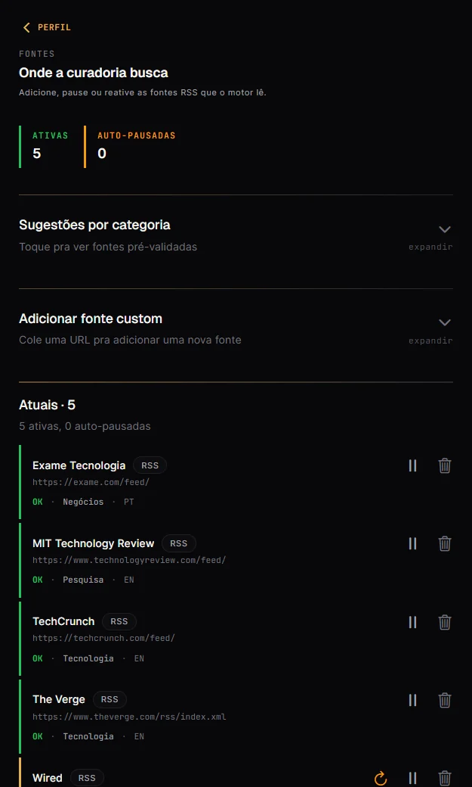
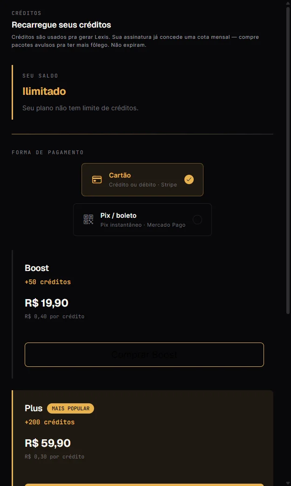

01 / the thesis
Curation is the product
The bet behind Lexi is simple to state: in a future of machine-generated content at scale, information curation becomes one of the greatest powers there is. When anyone can produce infinite plausible text, the scarce skill is deciding what deserves attention, and proving why.
"The internet of 2026 does not have a supply problem. It has a filter problem. Whoever filters delivers more value than whoever produces."Lexi vision document, 2026 (translated from the Portuguese original)
Two design consequences follow. First, provenance is not a feature, it is the contract: every synthesized claim in a Lexis carries a numbered citation back to its source, and the system tracks hallucination and citation-coverage SLOs. Second, the signal source matters: Lexi was born academic-first, built around arXiv and scientific feeds, where hypotheses and solutions appear before they reach the news cycle, with general RSS added later to complement the experience. The whole point is escaping generic content.
The next step of the thesis, documented but not yet built, is the user's voice: learning how each person writes and frames arguments, so the content produced after curation reads like them, not like a model.
02 / where it came from
From a Discord group to an engine
Lexi did not start as a startup idea. It started as a habit: curating news for a Discord group I shared with work colleagues. The curation kept getting better, and at some point it stopped being a feed and became a motor: the curated data started generating full articles and data visualizations on its own.
That progression, curation to synthesis to publication, is the product. It also connects to the larger thesis I work under: the next generation of great software companies will look like service companies, with automation, integration and data flows offering services through LLM tooling. Lexi is that pattern applied to information itself.
03 / the product, in screens
Built and running
All screens captured from the live app with a synthetic audit account. Dark theme, "Lumen" design system.








04 / under the hood
Engineering, not a wrapper
The monorepo separates a pure engine (RSS parsing, weighted scoring, synonyms, categorization: zero I/O, fully unit-tested) from serverless orchestration on Firebase, with a self-hosted RSSHub on Cloud Run. Curation runs on schedule, generation is adaptive (deep, focused or panorama depending on how much signal exists), and an anti-monopoly cap keeps any single source from dominating a feed.
Quality was enforced the hard way: four rounds of functional audit driving a real browser against production, DOM inspection included, which caught 40+ issues that a green CI never saw. LGPD is built in (export and delete account), and payments run through Stripe and Mercado Pago with HMAC-validated webhooks.
The pricing architecture
Three layers, all implemented and visible in the UI: subscriptions for cadence, credit packs for bursts, and model tiers per generation so the user chooses depth versus cost.
| Layer | Design |
|---|---|
| Subscription | Free (2 Lexis/mo), Pro R$19.90/mo, Pro Plus R$39.90/mo with queue priority; annual at ~17% off |
| Credit packs | 50 / 200 / 500 credits with decreasing unit price (R$0.40 to R$0.26), never expire |
| Model tiers | Economy 1 credit, Standard 5, Premium 8 per generation: depth is a user choice, not a plan wall |
05 / why it is on hold
An honest pause
During development, Lexi's token spend crossed the line of what my revenue-generating product (Auditor ATS) was bringing in. Part of that was LLM usage that still needed optimization work. With limited capital, I prioritized what was better assembled and earning, and paused Lexi at technical-beta stage: installable PWA live, store builds configured but unpublished.
What funding unlocks, in order: running the full system continuously, the academic-first layer at proper depth, and the voice model. The thesis did not get weaker while paused. Generated content keeps getting cheaper, which makes the filter worth more.